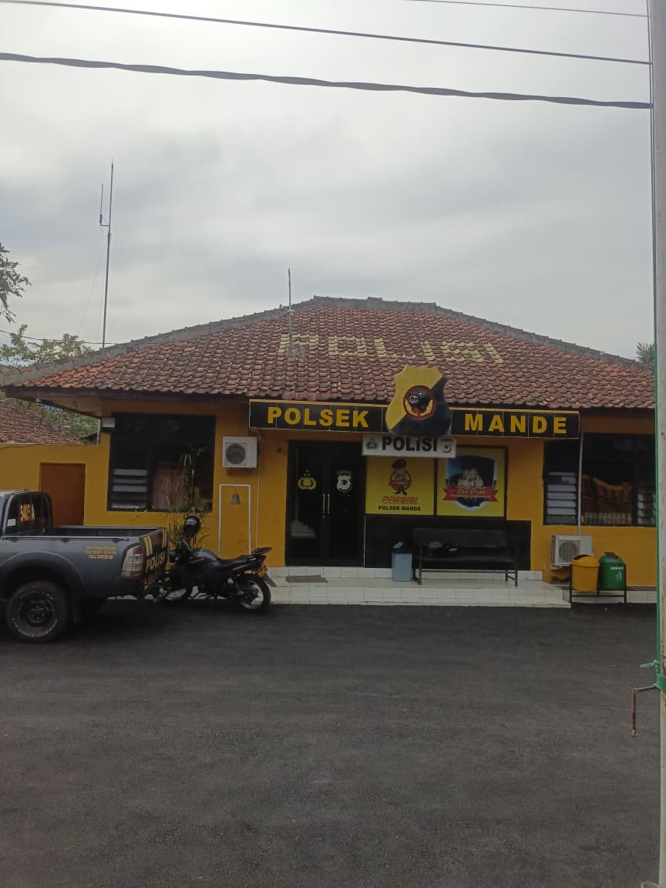

Profil Polsek Mande

Polsek Mande merupakan salah satu satuan kepolisian sektor di wilayah Cianjur yang bertugas menjaga keamanan, ketertiban, dan pelayanan masyarakat di Kecamatan Mande dan sekitarnya. Polsek ini menjadi garda terdepan dalam pelaksanaan tugas Polri di tingkat kecamatan.